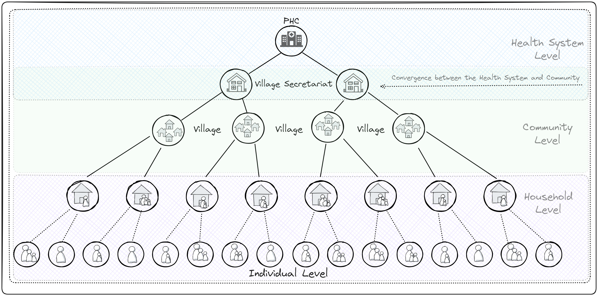
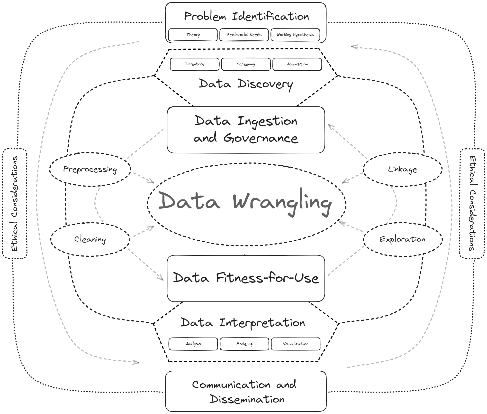
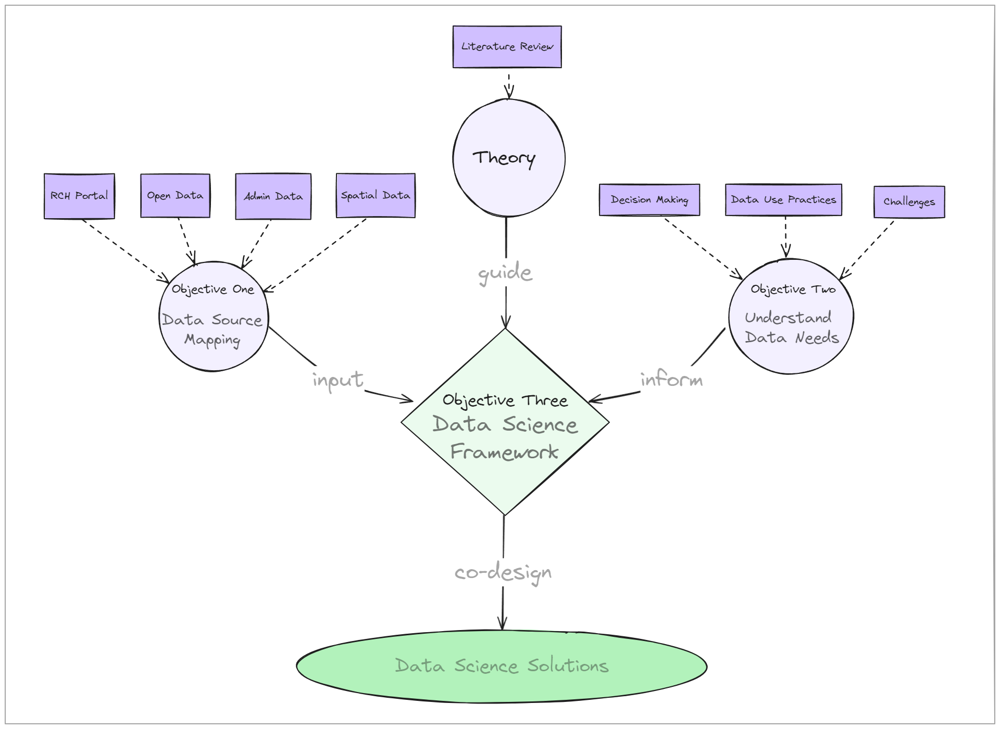
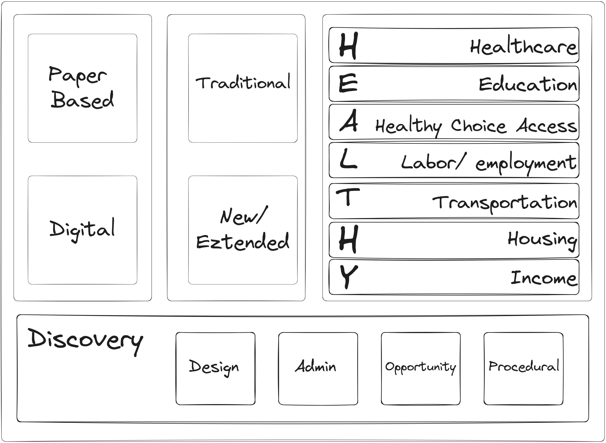
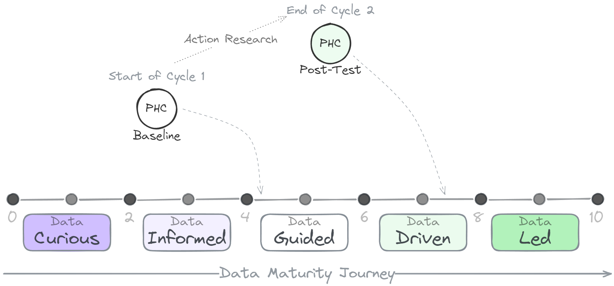

3 Methodology
This chapter provides an overview on the methods employed in the conduct of the study. The chapter is divided into the following headings:
- Research Context
- Study Objectives
- Study Design
- Study Setting
- Study Implementation
- Objective-wise Methods
- Ethical Considerations
3.1 Research Context
This study was initiated in response to pressing needs within the health system. It actively involved stakeholders from various sectors and levels. The study envisions to co-design and develop contextually relevant solutions to aid mid-level program managers in maternal and child health (MCH) service delivery at the local level.
The core methodology combines Action Research and Data Science to create a robust, context-sensitive framework for co-designing solutions. This approach offers a comprehensive, synergistic strategy that capitalizes on the strengths of each method while addressing their individual limitations. While Action Research excels in generating crucial context-specific insights, it may lack the scalability and capabilities that the data-centric approaches offer. Though the Data Science brings a robust set of tools for enabling researchers to reveal patterns that otherwise might not have been possible through traditional methods alone, it may sometimes overlook the nuanced, complex, and dynamic relationships within a system.
However, on its own, this approach might not ensure that these solutions are adaptable and responsive to the changing digtal public health landscape of the country. Viewing these solutions as Assemblages offer a lens to understand the fluidity and heterogeneity of systems recognising that maternal and child health outcomes are a result of multiple interactions of various actors. This ensures that the designed solutions are deeply rooted in the real-world context, and are both relevant and sustainable.
3.1.1 Operational Definitions:
Action Research (AR) Action research is a well established research method in the social and medical sciences since the mid-twentieth century, that involves a two-stage process: a collaborative analysis of the social situation by the researcher and the subjects of the research during the diagnostic stage, and collaborative change experiments during the therapeutic stage where changes are introduced and their effects studied.
Data Science Data science is described as an interdisciplinary field that combines domain expertise with statistical, mathematical, and computational methods to extract knowledge and insights from complex data. It integrates domain-specific knowledge with other sciences to inform and guide the analysis, ensuring that outcomes are relevant and applicable to particular real-world contexts, such as healthcare, economics, or environmental science.
Data Science Solution A data science solution in the context of this study is a systematic application of data analysis techniques and tools designed to support medical officers in making informed, timely, and effective on-ground decisions about maternal and child health (MCH).
Assemblage An assemblage is a dynamic configuration of diverse, interconnected components that collectively contribute to a specific function or outcome, retaining their distinct identities while cooperating within a network. This configuration is characterized by its adaptability, the multifaceted relationships among its parts, and its emergence from both local conditions and broader contextual influences.
3.2 Objectives
This project aims to develop data-science solutions to improve the delivery of maternal and child health (MCH) services at the local level for mid-level program managers through participatory engagement by;
- Identifying and mapping data sources on MCH care delivery in a tribal setting.
- Understanding the current state of data use, practices and challenges in the primary health centre (PHC) level.
- Exploring data on maternal and child health (MCH) services and interpret the findings in relation to the local context.
3.3 Study Setting
ITDA, Rampchodavaram
ASR District
Village Secretariat Model
Political Context of Andhra Pradesh

3.4 Study Design
To adequately explore the problem, we approached the Administration of the ITDA, Rampachodavaram to discuss the public health problems that they face on a daily basis. Initial discussions led to establishing maternal and child health (MCH) service delivery as the most prioritised issue among others such as malaria, sickle cell anaemia and malnutrition. The ITDA administration provided us with access to the support staff to help us understand the data and issues being faced. Subsequent meetings were set up to plan for the study and obtain the necessary permissions. The draft proposal was then approved by the ITDA administration and ethical clearances from the Institutional Ethics Committee were obtained.
The study employed an Action Research (AR) design based on a Data Science approach. The components of each of these are described below:
3.4.1 Action Research Component
Action Research is focused on solving real-world problems through a cyclical process of planning, acting, observing, and learning. We adopted the cycle originally proposed by (1) and built upon by (2), which have been both major contributions to the field of information systems (IS). For this study, we performed two cycles with the following components: (a) diagnose; (b) plan; (c) act; (d) evaluate; and (e) learn. The specifics of the implementation of these cycles are described in the Study Implementation section.
3.4.2 Data Science Component
We adopted the data science framework proposed by (3). The framework starts with the research question, or problem identification, and continues through the following steps: (a) data discovery; data ingestion and governance; data wrangling; fitness-for-use assessment; statistical modeling and analyses; communication and dissemination of results; and ethics review. The specifics of the data science component are mentioned in Section 3.6.3.

3.5 Study Implementation
The study was implemented based on the action research framework described in the study design section. The research scholar, who is a member of the tribal community belonging to ITDA, Rampachodavaram, took the role of the driver in the change process of co-designing data-science solution.
The first AR cycle was conducted to understand the data utilization and data sources relating to MCH in the ITDA setting, while the second AR cycle was done to design and develop the data science solutions.
3.5.1 Action Research Cycle 1
3.5.1.1 Step 1: Diagnose
In the first stage, we determined the current status of data utilization for local decision-making in the primary healthcare setting of ITDA, Rampachodavaram. We conducted a series of interviews with the medical officers, field staff, and data entry operators to understand the context and actors involved in decision-making. We then examined the current state of activities, data sources, and practices of data utilization, and identified problems, gaps, and needs. We also reviewed the existing data sources and reports to understand the quality and availability of data. The findings from this stage were then used to develop a topic guide for the subsequent stages of the study.
3.5.1.2 Step 2: Plan
A qualitative study was then planned to identifydata sources and explore the prevailing data utilization for decision-making related to MCH in the ITDA, Rampachodavaram setting. Following in-depth consultations with the ITDA administration, three Primary Health Centers (PHCs) - PHC Boduluru, PHC Gangavaram, and PHC Vadapalli - were purposively chosen. The criteria for their selection was the diversity in their local contexts and environments the PHCs represent. PHC - Boduluru and Vadapalli were chosen because of their lack of telecommunication, road and transport connectivity. PHC - Gangavaram was chosen because the medical officer is a member of the community. Topic Guides and additional tools were modified based on the literature review. Also, a subset of the data on MCH services was provided by the ITDA administration which was then taken up for further exploration.
3.5.1.3 Step 3: Act
The study was first piloted in PHC - Boduluru, where necessary methodological adjustments were made based on the initial findings and feedback. The methods included a combination of in-depth interviews, key informant interviews, document reviews, and informal discussions. The study was conducted over a period of several days in both the health facility settings and the field settings. The participants consisted of medical officers, field staff, data entry operators, and other support staff within the health system who play a crucial role in the data lifecycle and decision-making process. The study was then extended to Vadapalli and Gangavaram. Details of the data collection and analysis are described in the Objective-wise Methods section. Additionally, the subset of the data on MCH services provided by the ITDA administration was cleaned and variables of interest were identified.
3.5.1.4 Step 4: Evaluate
The qualitative data was analysed by manual content analysis and themes were organised into three main categories (a) practices, (b) needs, and (c) challenges that each impacted the data utilization of maternal and child health data. The data sources identified were mapped according to the recommendations of the 3D-Commission Report and the findings were then presented to the ITDA administration and the health staff for feedback (torres2021juh?). The data maturity of the health system was evaluated using the Data Maturity Assessment Tool (data.org2022da?). The DMA tool provides a framework for assessing the maturity of data systems in the health sector. The tool was used to assess the data maturity of the health system in three categories (a) purpose, (b) practice, and (c) people. The results were then used to develop a roadmap for improving the data maturity of the health system. The findings were considered baseline data for the subsequent cycles of the study.
3.5.1.5 Step 5: Learn
In this phase, the focus was on integrating feedback from key stakeholders, including medical officers and data operators, to conceptualize a solution addressing identified needs. The deliberation process included perspectives from the medical officers, data entry operators, and data collectors. These deliberations emphasized the development of a data science solution that is tailored to support the decision-making needs at the village/village secretariat level. Additional problems relating to data collection, data quality and data portals were also discussed. Further discussions around the Data Maturity Assessment Tool’s findings informed the creation of targeted improvement roadmaps for each PHC, aligning with the specific contexts and challenges identified through the research.
3.5.2 Action Research Cycle 2
3.5.2.1 Step 1: Diagnose
This stage involved the identification of key variables and inputs for designing solutions based on the needs and challenges identified in the previous cycle. Through comprehensive consultations with the medical officers at each PHC, it was agreed that a customizable dashboard should be developed. Initial efforts centered on creating a prototype with a common layout, which could be adjusted according to the specific requirements of each medical officer. Also, changes in the RCH portal in 2024, including modifications to data structure and user-authentication protocols, necessitated algorithmic adjustments to accommodate these updates. It was also decided that spatial data resources for each PHC must be created for future use.
3.5.2.2 Step 2: Plan
Adaptations to the RCH portal now required medical officers to authenticate access via one-time passwords (OTPs) sent to registered mobile phones. To facilitate efficient data handling, a system of shared folders was established, allowing for daily data downloads post-authentication. This stage involved meticulous review and organization of data sources, with a specific focus on mapping identification variables necessary for data linkage. Concurrently, the attributes for the dashboard were defined, and data pipelines were restructured to align with the recent changes in the data architecture.
3.5.2.3 Step 3: Act
The dashboard’s development adhered to several key design principles, with paramount importance placed on meeting the user’s needs and enhancing data interpretability. Medical officers actively participated in the data exploration phase, collaborating on the creation of data visualizations and summaries. This approach ensured that the dashboard’s design was both practical and user-centric. All data curation, pre-processing, analysis and visualization were done using the statistical programming language R adhering to the best practices in Data Science (3,higgins2022?). Details regarding the development process are elaborated in the Objective-wise Methods section.
3.5.2.4 Step 4: Evaluate
The evaluation phase was conducted in two parts. The first involved testing the functionality and usability of the MCH Dashboard. The usability testing was done through structured sessions with medical officers, where specific tasks were performed to identify challenges and assess functionality. Additionally, impact analysis was carried out through interviews to understand the dashboard’s influence on the decision-making process. For the second part of the evaluation phase, Data Maturity Assessment Tool (data.org2022da?) was reapplied and changes since the baseline assessment were discussed.
3.5.2.5 Step 5: Learn
Structured feedback sessions were organized with all stakeholders involved in the dashboard implementation, focusing on collecting qualitative feedback about the process and its effectiveness. Additionally, Assemblage Theory (buchanan2020assemblage?) was employed as a theoretical framework to analyze how different components of the health system reorganized and interacted throughout the research. This theoretical exploration helped map the connections and dependencies affected by the interventions, providing a nuanced view of the system dynamics.
3.6 Objective-wise Methods
In this section, we describe the specific methods used to achieve each objectives of the study.
An overview of the study objectives and how they relate to each other is presented in Figure 3.1. Through the first objective, we intend to map the sources of data related to maternal and child health in the study area. Similarly, the second objective was designed to comprehensively understand the data utilization, practices, challenges and needs of the grass-root level functionaries in their daily decision making activities. The theory and wokring hypothesis is developed based on the literature review and domain knowlege. These three elements collectively feed into the third objective. The ultimate aim of the study is to design data science solutions in a participatory way addressing real-world needs and challenges.The lines represent the relationships betweem different element, while the dotted lines represent the components within each element.

3.6.1 Objective 1
- Identifying and mapping data sources on MCH care delivery in a tribal setting.
The purpose of identifying and mapping data sources was to provide us with a deeper understanding of the relationships between different elements and concepts in the data. This process was crucial for the subsequent stages of the study, where we needed to understand the data utilization for decision-making. The data sources were identified through literature review, document review, key informant interviews, in-depth interviews and discussions with the stakeholders. Details of the stakeholder engagements are presented in the Study Implementation section. The data sources were then categorised as paper-based vs digital, and traditional vs new/ extended. The data sources were also organised based on seven social determinants of health namely healthcare (H), education (E), access to healthy choices (A), labor/employment (L), transportation (T), housing (H), and income (Y), collectively termed ‘HEALTHY’ determinants as recommended by (torres2021juh?). The data sources were also mapped according to their discovery and repurposing tasks into different types such as designed data, administrative data, opportunity data and procedural data (4). The data are then described based on their category, type, granularity, variables of interest and periodicity. The mapping exercise helped us understand the flow of data from the point of collection to the point of decision-making, and identify the gaps and challenges in data utilization.

3.6.1.1 Data Source Definitions
Traditional Data Sources These refer to data sources that have already been established and widely used in research. Traditional sources often require institutional arrangements and resources for collection, processing, and dissemination. Examples of traditional data sources in the study include national censuses, surveys, administrative data, and vital registration systems.
New/ Extended Data Sources These refer to emerging data sources that are making new data elements available, often in real-time or on a more frequent basis than traditional sources. Examples of new data sources in the study include social media data, mobile phone data, remote sensing data, and crowd-sourced data. New sources are often more flexible, cost-effective, and timely. However, they may require new analytical tools and their quality and reliability are often uncertain.
3.6.1.3 Based on the Data Science Framework(3,4,7)
- Designed Data: Data that have been intentionally collected through statistically designed and structured observational methods for specific research or scientific purposes.
- Administrative Data: Data collected for the routine administration of an organization or program, often involving government or corporate operations, without primary intent for research use.
- Opportunity Data: Data generated continuously through interactions with digital platforms and services as society engages with technology daily.
- Procedural Data: Data focused on documenting the processes, policies, and required standards associated with data handling and management in various contexts.
3.6.2 Objective 2
- Understanding the current state of data use, practices and challenges in the primary health centre (PHC) level.
3.6.2.1 Study Design and Setting
For achieving this objective, we conducted a facility based qualitative study within an action research framework, aimed at understanding the data utilization practices in maternal and child health (MCH) services within ITDA, Rampachodavaram. The study was conducted as part of the first cycle of the Action Research. The qualitative approach allowed for an in-depth understanding of the contextual realities while providing the flexibility to engage with the stakeholders in identifying hidden themes and patterns.
The study had two parts: (a) understanding the data utilization practices and challenges in the PHCs, and (b) assessment of data maturity in the organization using the Data Maturity Assessment Tool (8).
3.6.2.2 Sample Selection
As of September 2021, ITDA, Rampachodavaram has a total of 18 Primary Health Centres (PHCs) catering to the health needs of the tribal population. There were 38 sanctioned positions of medical officers, out of which 11 were vacant. Due to the geographic distribution and logistical purpose, it was decided in consensus with the ITDA Administration and the health department that three PHCs will be chosen for the conduct of this study. The three PHCs were PHC Boduluru, PHC Gangavaram, and PHC Vadapalli. There were a total of 5 medical officers, 15 field staff, 3 data entry operators, and 5 support staff in these PHCs. The participants were chosen based on their role in the data lifecycle and decision-making process.
3.6.2.3 Data Collection
For the first part understanding the data sources and data flow in the PHCs, data was collected through in-depth interviews, key informant interviews, document reviews, and informal discussions. The topic guide for these interviews are included in the Appendix. The data collection was done in the local language and the responses were audio recorded verbatim.
For the second part, the medical officers were requested to take the Data Maturity Assessment (8). The self-administered tool consists of 35 questions in three categories (a) purpose, (b) practice, and (c) people and takes 12 minutes to complete. This tool was applied at two time points - baseline and post-test to understand the changes in data maturity.
The data collection was done with the consent of the participants and the ethical guidelines were followed throughout the process.
3.6.2.4 Data Analysis
The recorded interviews were transcribed verbatim and translated into English. The transcripts were then subjected to manual content analysis using inductive and deductive coding which yielded codes and categories. The coding was done by two independent coders and any conflicting issues were resolved by discussions. The codes and categories were then reviewed by the research team and the final themes were identified and presented to the stakeholders for validation. The emergent themes were then reviewed and interpreted in the context of existing literature and the specific objectives of the study to draw meaningful conclusions about the state of MCH data utilization and areas for improvement. These were then used to inform the second cycle of the Action Research where the data science solutions were designed and developed.
Additionally, the Data Maturity Assessment was scored based on the responses of the participant. Each of the sub-categories are scored from 0 to 10 which are then used to calculate the categories score and overall score, which are also scored against a maximum of 10. These scores indicate the position of the organization in the journey towards data maturity (See Figure 3.2). These scores were then compared between the baseline and post-test to understand the changes in data maturity. The findings of the study were then used to develop a roadmap for improving the data maturity of the health system.

3.6.3 Objective 3
3.6.3.1 Problem Identification
The data science process started with the identification of the problem. An in-depth analysis of the problem involving literature review, and application of relevant theories was done to find best practices to approach the problem. The role of the stakeholders was critical to bringing data to bear on real problems.
3.6.3.2 Data Discovery
Data discovery is the identification of potential data sources that could be related to the specific topic of interest with a focus on massive repurposing of existing data. The discovery process was critical in outlining the pipelines and associated tools necessary to develop solutions. The discovery started with assembling a list of data sources that are used for local decision-making. The data sources were then screened to include the most relevant variables of interest.
3.6.3.3 Data Governance
Data governance is the establishment of and adherence to rules and procedures regarding data access, dissemination, and destruction. In our data science framework, access to and management of data sources was defined in consultation with the stakeholders, the administration of ITDA and the institutional review board. The data ingestion process involved designing data analysis pipelines that efficiently manages computationally demanding analysis projects by skipping the execution of tasks that are already up to date and supports implicit parallel computing. This functionality ensures that the results remain consistent with the current code and data, enhancing trustworthiness and reproducibility. secure and encrypted storage of data in the server of our institute (SCTIMST).
3.6.3.4 Data Preparation
The activities in this phase was aimed at integrating data from different sources to create a unified dataset that was both comprehensive and suitable for analysis. These activities were done iteratively involving incremental but continuous refinement of the algorithms to address issues of data representativeness, accuracy, completeness, and consistency. All the steps performed in this phase were done using the open-source statistical programming language R (rcoreteam2023?).
The specific steps in this phase include the following:
Data Pipeline Setup The identified data sources were integrated into a data pipeline that facilitated the flow of data from the source to the analysis stage. After thorough literature review and considering the volume and variety of data sources, a computational and reproducible data analysis pipeline framework and a functional programming approach was adopted. This was achieved using the
targetspackage which provides a Make-like environment for computationally intensive tasks in R.(landau2021targets?)Data Cleaning Once the data is loaded into the pipeline, the data cleaning process was based on the Tidy Data Principles.(9,wickham2014jss?,wickham2019welcome?,wickham2016r?)
Data Encryption In this study, data anonymization and encryption were implemented to ensure the privacy and security of sensitive maternal and child health data. We utilized the
encryptr(10) R package, which employs the Rivest–Shamir–Adleman (RSA) encryption algorithm – a public-key cryptosystem beneficial for its security features that rely on the computational difficulty of factoring the product of two large prime numbers.(11) The encryption process involved generating a pair of encryption keys which are stored securely for subsequent encryption and decryption processes. Sensitive fields such as mother’s, father’s or the child’s names, their home addresses, bank details, and contact information were encrypted using the public key, rendering the data anonymous while stored and analyzed. The decryption process, executed only for authorized data validation, utilized the corresponding private key to revert the encrypted data to its original form. This approach ensured that personal data remained secure throughout the study, adhering to ethical standards for data privacy.Data Linkages In this study, comprehensive data linkages were established between various health data sources to enable a multifaceted analysis of maternal and child health across different administrative levels. The primary data sources integrated were the Reproductive and Child Health (RCH) Portal Data, Health Management Information System (HMIS) Portal Data, and various administrative datasets. To facilitate the linkage of these diverse data sources, spatial data science methods including GIS were employed to geo-reference the data. This enabled the alignment of individual-level data from the RCH Portal with facility-level data from the HMIS Portal and broader administrative-level data. New spatial resources such as the PHC boundaries and Sub-center boundaries were creating using methods for estimating health facility catchment area (HFCA).(12) The creation of these new data resources allowed us to spatial analysis and for visualizing the geographic distribution of health services and outcomes
Data Transformation Following georeferencing and linkage of data, we proceeded with the transformation of the integrated dataset to refine, append and create new variables essential for our analysis. These variables include socio-demographic details, pooled estimates of health indicators, population adjusted estimates, vaccination coverage, categorization of numeric variables etc. This process was executed using R, leveraging the
tidyversesuite of packages.
3.6.3.5 Fitness-for-Use Assessment
The unified dataset underwent a rigorous fitness-for-use assessment to evaluate its adequacy for answering the research questions. This was done using data validation checks. The data validation pipeline utilised the principles of Information Management and implemented using the pointblank package in R.(13)
3.6.3.6 Data Interpretation
To adequately interpret the data we adopted the lifecourse approach to maternal and child health. This way we could explore events relating to the lifecourse that are captured through the routine health information system. The data interpretation included exploring the insights into health service delivery like registrations, antenatal care (ANC) visits, postnatal care (PNC) visits, and immunization. This was done thorough a series of iterative processes involving exploratory data analysis (EDA), exploratory spatial data analysis (ESDA) and statistical analysis and modeling.
The findings of these processes are then tabularized and visualised at different levels to facilitate discussion among stakeholders.
3.6.3.6.1 Exploratory Data Analysis
The exploratory data analysis (EDA) was conducted to understand the structure of the data, identify patterns, and detect anomalies. The EDA involved the use of descriptive statistics, data visualization, and hypothesis testing to explore the relationships between variables. The EDA was instrumental in identifying data quality issues, such as missing values, outliers, and inconsistencies, which were subsequently addressed in the data cleaning phase iteratively.
3.6.3.6.2 Exploratory Spatial Data Analysis
The exploratory spatial data analysis (ESDA) was conducted to understand the spatial distribution of health services and outcomes in the study area. The ESDA involved the use of spatial statistics, geovisualization, and spatial autocorrelation analysis to explore the spatial patterns and relationships between health services and outcomes. The ESDA was instrumental in identifying spatial clusters, hotspots, and spatial disparities in health services and outcomes, which were subsequently addressed in the data transformation phase iteratively.
3.6.3.6.3 Statistical Analysis and Modeling
The statistical analysis and modeling were conducted to explore the relationships between variables, identify predictors of health services and outcomes, and develop predictive models.
3.6.3.7 Communication and Dissemination
The study’s findings were effectively communicated through various internal and external channels. Internally, detailed results were presented to PHC medical officers and the ITDA administration during dedicated health staff meetings, accompanied by comprehensive dashboards, presentations and reports that highlighted key issues. Additionally, we organized capacity-building programs to ensure that the stakeholders could practically apply the study’s outputs and deliverables. These programs included sharing well-documented code, data, and operational manuals to facilitate ongoing utilization and understanding.
Externally, the research outcomes were shared with the broader academic community through publications in peer-reviewed journals and presentations at relevant conferences. An open communication channel was maintained throughout the project with all stakeholders, including medical officers and administrative bodies at the district and state levels, ensuring continuous feedback and engagement.
3.7 Ethical Considerations
This study was conducted after obtaining ethical clearance from the Institutional Ethics Committee of the Sree Chitra Tirunal Institute for Medical Sciences and Technology (SCTIMST), Trivandrum (IEC Approval Certificate number: IEC/2047; IEC/IECRegNo.ECR/189/Inst/KL/2013/RR-16).
The study interviews and administration of the Data Maturity Assessment Tool were done after obtaining informed consent (Informed Consent and Participant Information Sheet - Annexure ).
Futher, necessary permissions for data use were obtained from the Administraton of Integrated Tribal Development Agency (ITDA), Rampachodavaram (ITDA Permissions - Annexure Number: ). Privacy and Confidentiality of the data from the RCH Portal was maintained using two factor data encryption and decryption methods. The data was stored in a local disk and access was restricted to the research team.
The study was also registered with the Clinical Trials Registry of India (CTRI) (CTRI/2024/04/066298).